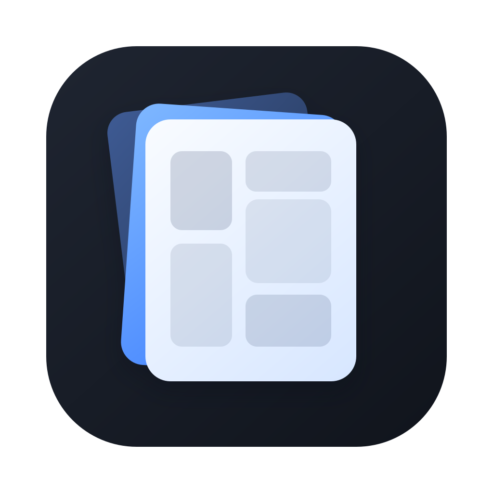
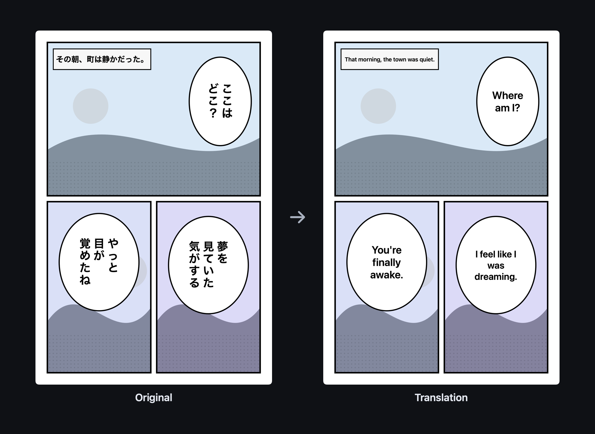

macOS
macOS 14 (Sonoma) or later
ZIP archive · Unzip and move Panely.app to Applications.
Experimental translation requires macOS 26 or later.

A minimal, fast comic & image viewer for macOS and Windows.
Read your comics, your way. Free and open source.
macOS 14 (Sonoma) or later
ZIP archive · Unzip and move Panely.app to Applications.
Experimental translation requires macOS 26 or later.
Windows 10 version 2004 (build 19041) or later · Windows 11
Portable ZIP · Choose x64 for Intel / AMD PCs. Extract and run Panely.exe; no .NET install needed.
ARM64 is for Windows on ARM (e.g. Snapdragon); it has not been tested on an ARM device yet.
A quiet reader for your local comic collection, on Mac and PC.
Single page, double-page spread, or vertical scroll for webtoons. Read left to right or right to left.
Open folders or archives, including nested archives up to three levels deep. Pages follow natural filename order.
Turn pages, jump to a page, bookmark a favorite scene, and change layouts from the keyboard. See shortcuts for each platform below.
Zoom, fit to screen, width or height, and browse page thumbnails without leaving the reader.
Save a page bookmark or star a book for quick access from the library.
Each app remembers your reading position and per-series reading settings on that device.
On macOS, use Finder’s Open With menu. On Windows, add the optional “Open with Panely” entry in Settings.
Experimental on-device translation reads speech balloons and places a machine translation over the page. Both apps let you correct balloons and export translated books; quality and available features vary by platform.

Requires macOS 26 or later. Uses Apple’s on-device text recognition and Translation, with system language packs.
Download the language pack once, then translate offline. Uses local OCR and M2M100 models. Translation is experimental; short lines and idioms can be inaccurate. Use Fast mode; Accurate mode is untested.
Choose the instructions for your platform. Both apps run without administrator installation.
xattr -dr com.apple.quarantine /Applications/Panely.appTo update, close Panely and replace the folder’s contents with the new ZIP. Checksums are in SHA256SUMS.txt on the release page.
Report a problem or request a feature in the repository for your platform.
The same reading actions, with shortcuts that fit your OS. More commands are available in each app’s menus.
| Action | macOS | Windows |
|---|---|---|
| Open folder / archive | ⌘O | Ctrl+O |
| Previous / next page | ← / → | ← / → |
| Go to page | ⌘G | Ctrl+G |
| Toggle page bookmark | ⌘D | Ctrl+D |
| Single / spread / vertical | ⌘⇧1 / 2 / 3 | Ctrl+Shift+1 / 2 / 3 |
| Fit screen / width / height | ⌘1 / 2 / 3 | Ctrl+1 / 2 / 3 |
| Pin library sidebar | ⌃⌘S | Ctrl+Alt+S |
| Show thumbnails | ⌃⌘P | Ctrl+Alt+P |
| Original ↔ translation | ⇧⌘T | Ctrl+Shift+T |
| Jobs window | ⌥⌘J | Ctrl+Alt+J |